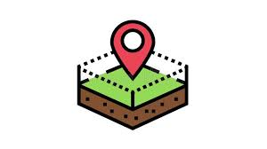
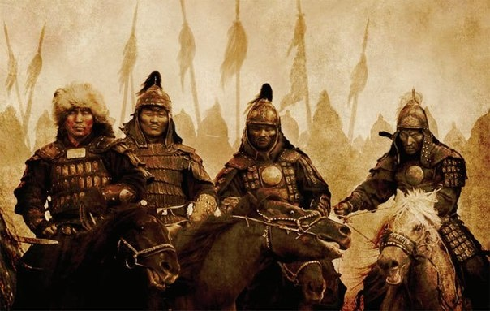
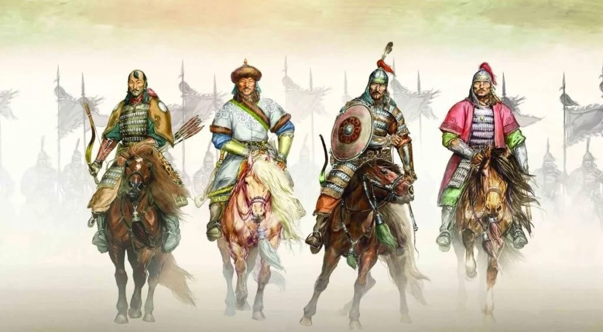
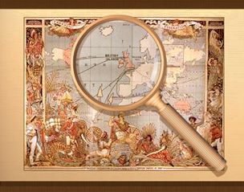
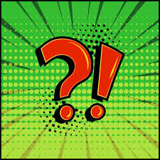

Ұлы Дала Құрылтайы
Ойынды қалай түсінесің?
 «Ұлы Дала Құрылтайы» — бұл жоңғар шапқыншылығы кезеңін модельдейтін тарихи-стратегиялық үстел ойыны. Ойынның негізгі мақсаты — оқушыларға XVIII ғасырдағы қазақ қоғамының саяси, әлеуметтік және әскери жағдайларын түсіндіру, сондай-ақ тарихи ойлау мен шешім қабылдау қабілетін дамыту..
«Ұлы Дала Құрылтайы» — бұл жоңғар шапқыншылығы кезеңін модельдейтін тарихи-стратегиялық үстел ойыны. Ойынның негізгі мақсаты — оқушыларға XVIII ғасырдағы қазақ қоғамының саяси, әлеуметтік және әскери жағдайларын түсіндіру, сондай-ақ тарихи ойлау мен шешім қабылдау қабілетін дамыту.. Бұл ойын дәстүрлі оқыту тәсілдерінен ерекшеленеді, себебі мұнда қатысушы тек тыңдаушы емес, тарихи процестің тікелей қатысушысына айналады. Әр ойыншы белгілі бір рөлді қабылдап, сол рөлдің атынан әрекет етеді..
Ойынның алғашқы кезеңінде қатысушыларға рөлдер бөлінеді. Әрбір рөлдің өз міндеті мен ықпалы бар. Хан — биліктің жоғарғы өкілі, ол маңызды шешімдерді қабылдайды және кей жағдайларда ойыншыларды қолдай алады. Би — әділдік пен ақылдың символы, ол даулы мәселелерде кеңес береді және күш қолдануға қарсы болуы мүмкін. Батыр — ел қорғаны, ол қауіпсіздік пен әскери әрекеттерге жауап береді. Төре — саяси ықпалға ие тұлға, ол жағдайды өз пайдасына шешуге тырысады. Ал халық — қоғамның негізі, олардың дауысы мен пікірі жалпы жағдайға әсер етеді.

Ойын басталғаннан кейін әр қатысушыға белгілі бір территория беріледі. Территориялар ойынның негізгі элементтерінің бірі болып табылады. Олар үш деңгейге бөлінеді: жасыл, қызғылт сары және қызыл. Жасыл деңгейдегі территориялар әлсіз қорғалған, оларды алу оңай. Қызғылт сары деңгей — орташа қорғаныс, ал қызыл деңгейдегі территориялар ең мықты қорғалған аймақтар болып есептеледі. Ойын барысында қатысушылар территорияларын дамытуға, қорғауға немесе басқа ойыншылардан тартып алуға тырысады. Бұл әрекеттер тарихи сұрақтарға жауап беру арқылы жүзеге асады. Әр дұрыс жауап үшін ойыншы монета алады. Монета — ойын ішіндегі маңызды ресурс, ол билік пен ықпалдың көрсеткіші болып табылады..
Ойын барысында қатысушылар территорияларын дамытуға, қорғауға немесе басқа ойыншылардан тартып алуға тырысады. Бұл әрекеттер тарихи сұрақтарға жауап беру арқылы жүзеге асады. Әр дұрыс жауап үшін ойыншы монета алады. Монета — ойын ішіндегі маңызды ресурс, ол билік пен ықпалдың көрсеткіші болып табылады.. Монеталар арқылы ойыншы өз территориясын күшейте алады немесе белгілі бір артықшылықтарға ие болады. Мысалы, территорияның деңгейін көтеру үшін монета жұмсауға болады. Сонымен қатар, кей жағдайларда монеталар басқа ойыншыларға әсер ету немесе келісім жасау үшін қолданылады.
Монеталар арқылы ойыншы өз территориясын күшейте алады немесе белгілі бір артықшылықтарға ие болады. Мысалы, территорияның деңгейін көтеру үшін монета жұмсауға болады. Сонымен қатар, кей жағдайларда монеталар басқа ойыншыларға әсер ету немесе келісім жасау үшін қолданылады.
Ойынның маңызды ерекшеліктерінің бірі — әр үш айналым сайын енгізілетін тарихи жағдаяттар. Бұл жағдаяттар жоңғар шапқыншылығы кезеңіндегі нақты жағдайларға негізделген. Мысалы, ішкі алауыздық, сыртқы қауіп немесе халықтың наразылығы сияқты жағдайлар ұсынылуы мүмкін. Мұндай кезде барлық ойыншылар өз рөлдеріне сәйкес шешім қабылдайды.
Бұл кезеңде хан ерекше рөл атқарады. Ол белгілі бір ойыншыны қолдап, оған қосымша монета бере алады. Бұл әрекет ойын ішіндегі саяси ықпалды көрсетеді және басқа қатысушылардың стратегиясына әсер етеді. Осылайша, ойын тек білімге ғана емес, сонымен қатар келіссөз жүргізу мен стратегия құруға негізделеді. Ойын барысында күтпеген жағдайлар да болуы мүмкін. Мысалы, «қауіп-қатер» немесе «құпия қазына» сияқты арнайы карталар енгізіледі. Қауіп-қатер карталары ойыншылардың жағдайын қиындатуы мүмкін, ал құпия қазына керісінше артықшылық береді. Бұл элементтер ойынға динамика қосып, қызықты етеді.
Ойынның соңғы кезеңінде қатысушылардың жинаған территориялары, монеталары және қабылдаған шешімдері есепке алынады. Ең тиімді стратегия қолданған және тарихи жағдайларға дұрыс бейімделген ойыншы жеңімпаз атанады.
Бұл ойын тек ойын-сауық құралы емес, сонымен қатар білім беру құралы болып табылады. Ол оқушыларға тарихты тереңірек түсінуге мүмкіндік береді. Қатысушылар тарихи себеп-салдар байланыстарын талдайды, өз пікірін білдіреді және топпен жұмыс істеуді үйренеді.
Сонымен қатар, ойын стратегиялық ойлауды дамытады. Әр шешімнің салдары бар екенін түсіну арқылы оқушылар жауапкершілік сезімін қалыптастырады. Бұл дағдылар тек тарих сабағында ғана емес, күнделікті өмірде де маңызды.
Ойынның тағы бір маңызды артықшылығы — оның заманауи технологиялармен байланысы. Ойынның артқы бетінде орналасқан QR-код арқылы қатысушылар арнайы сайтқа өтіп, қосымша материалдарды қарай алады. Бұл жерде ойынның толық ережелері, жоңғар шапқыншылығы туралы конспекттер және бейнематериалдар ұсынылады.
 Осылайша, «Ұлы Дала Құрылтайы» ойыны дәстүрлі білім мен заманауи технологияларды біріктіреді. Бұл оны ерекше және тиімді оқу құралына айналдырады.«Ұлы Дала Құрылтайы» ойыны дәстүрлі білім мен заманауи технологияларды біріктіреді. Бұл оны ерекше және тиімді оқу құралына айналдырады.
Осылайша, «Ұлы Дала Құрылтайы» ойыны дәстүрлі білім мен заманауи технологияларды біріктіреді. Бұл оны ерекше және тиімді оқу құралына айналдырады.«Ұлы Дала Құрылтайы» ойыны дәстүрлі білім мен заманауи технологияларды біріктіреді. Бұл оны ерекше және тиімді оқу құралына айналдырады.
Өйткені бұл ойында, әр шешім — тарихқа із қалдырады.
Сен дайынсың ба?